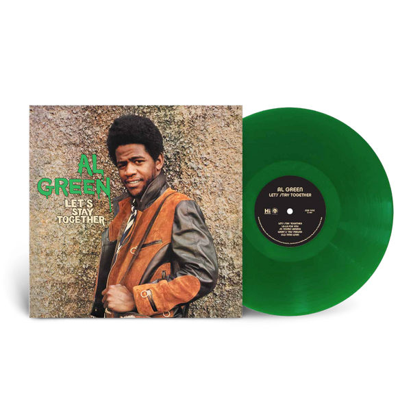
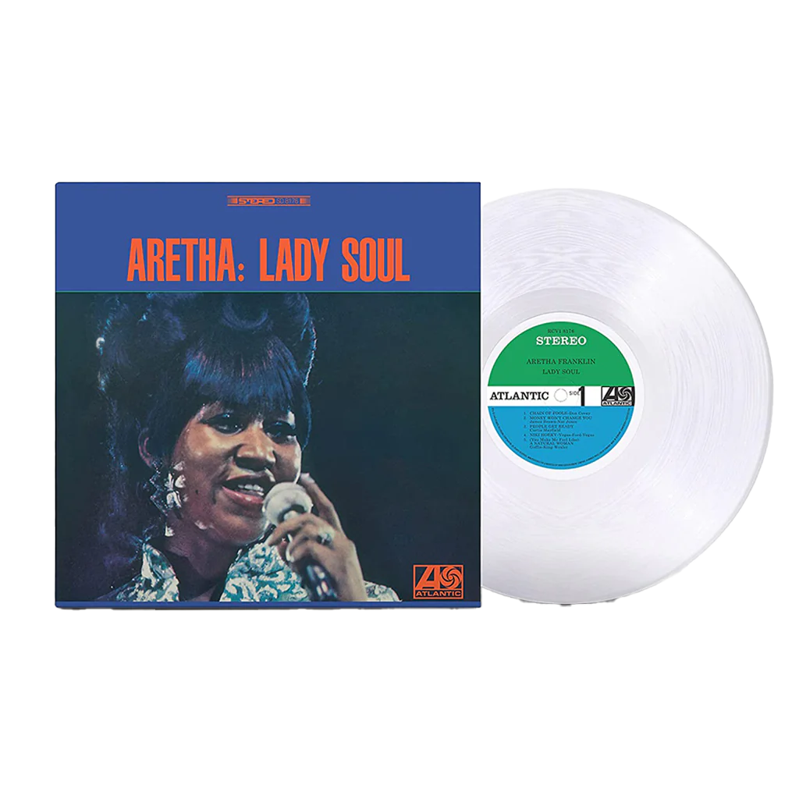

Vinyl records are more than just a way to play music — they carry weight, texture, and warmth. The gentle crackle of the needle touching the groove feels alive, reminding us that imperfection can be beautiful. Holding a record, turning it over, and studying its cover art transforms listening into a mindful ritual.
 Vinyl records became popular in the mid-20th century and defined music culture for decades. Even when CDs and streaming took over, vinyl never really went away. In fact, it’s made a big comeback in recent years, as people fall in love again with the unique sound and physical presence that digital music just can’t match.
To play a record, you place it on a turntable, gently lower the needle, and let it spin. Music emerges from the microscopic grooves, amplified into sound. Every step, from pulling the record out of its sleeve to flipping it over and hearing those first crackles, makes listening feel slower, more focused, and more real than just hitting “play” on a streaming app.
Vinyl demands attention. Unlike endless digital playlists, it asks you to commit to an album, to sit down and listen. Each record is not only sound, but also an object: the artwork, the texture, and the small imperfections that make every listen unique. It’s music you can touch, see, and feel.
Thoughts: Background Animation: A rotating vinyl record. Effects: 1.When the mouse hovers over the record, the needle moves into place and starts playing. 2. Random visual grain appear across the webpage, simulating analog imperfections. Supporting Material: An instructional video showing how to use a vinyl record player.